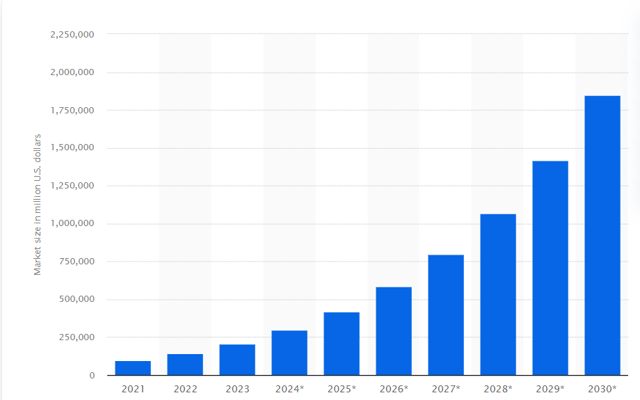
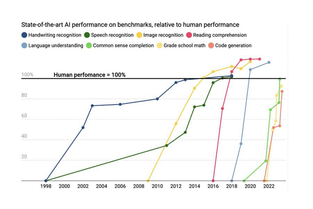

Artificial Intelligence (AI) has long been one of the most debated topics in modern technology, partly due to its exceedingly vast capabilities and
potential, but mostly – and more importantly - due to the fear of what those capabilities could cause. Having immeasurable power for calculation and
computation, today’s AI tools are already competent in completing complex tasks, that would take most humans many hours, in just mere seconds.
It is no wonder that great intellects such as Steven Hawking warn that AI will “outperform humans” and “could spell the end of the human race”.
As we watch AI become increasingly common in our world, should we embrace the changes and ease it brings to our lives, or should we become
increasingly weary of its intelligence and seemingly boundless growth?
Introduction
AI enhances our world in various different aspects. Robots created for human assistance such as: Siri, Alexa and other various chatbots have become integral
parts of our daily lives and are used in a wide range of situations (Wirtz et al, 2018).
With a global market value of $241 billion in 2023 and an expected tenfold increase by 2030 to bring its global value close to $2 trillion, AI is
becoming all the more central to society (Statista, 2023).

AI Global Market Size Forecast until 2030 (Next Move Strategy Consulting, 2023)
Analysis and discussion
Beyond simple assistive tasks, AI’s application to industry has been revolutionary. The medicinal world has reaped huge benefits from AI, particularly in
diagnosis. Where a doctor takes years of learning and experience to develop their diagnosis skills, an AI model can be trained in a matter of weeks.
A study conducted by Seoul National University Hospital found that the deep-learning AI model they developed was able to analyse chest radiographs and
detect abnormal cell growth and potential cancers. Not only was its diagnosis correct but it outperformed 17 out of 18 trained
physicians (Nam and Park et al., 2018).
It’s this very element of ‘training vs performance’ which makes AI so profound, in that the amount of training it needs to reach human-level or beyond
performance at a task is miniscule in comparison to the amount of time humans need training. Furthermore, the level of performance it can reach is not
limited by human factors, meaning in many tasks – often pattern recognition or data analysis – AI rapidly surpasses human ability (Time magazine, 2023).

Source: ContextualAI, 2023
As shown, AI models have surpassed human ability in pattern recognition tasks since the mid 2010’s and as we approach the mid 2020’s AI models are
reaching maximum human ability at more complex tasks such as mathematical calculations and text generation.
In its current state, AI is mostly used for support under human control and guidance to complete tasks that are heavily processing-based, rather than
completely replacing the human role. The finance world is one of the biggest examples of this, where AI models have been integrated into their work to
handle large data-processing and market trend analysis. Training AI models to recognise fraudulent payments, risks with loans, and probability of
investment success has majorly enhanced the efficiency of many banks globally and is estimated to have saved $447 billion in costs (Insider Intelligence, 2023).
Not only finance, but almost every industry in the world has implemented AI into their services and benefited greatly from its use (Statista, 2023).
The table below shows the implementation of AI worldwide, by industry and function:
Table 1: AI usage worldwide, by industry and function:
Industry
Human Resources
Manufacturing
Marketing & Sales
Product/Service development
Risk
Service Operations
Strategy & Corperate finance
Supply Chain Management
All industries
11%
8%
5%
10%
19%
19%
21%
9%
Business, legal, and professional services
11%
10%
9%
8%
16%
20%
19%
12%
Consumer goods/retail
14%
4%
3%
4%
15%
31%
29%
11%
Financial services
1%
8%
7%
31%
17%
24%
23%
2%
Healthcare/pharma
15%
7%
2%
4%
22%
12%
8%
8%
High tech/telecom
6%
6%
4%
7%
38%
21%
25%
8%
Statista, 2023
The prospects and benefits of AI are clear: immense potential for growth and development, undisputed benefits for a wide range of industry, and substantial
increases in profits.
Putting economic growth aside, there are essential ethical, moral and environmental concerns when it comes to AI. Education in particular has been notably
affected by the recent development of generative AI tools such as ChatGPT, which has the ability to read, understand and write entire texts. In an entire
new generation of students, 43% report using ChatGPT for assignments and exams, affecting their standard of education by their use of generative AI to
replace their own work and potentially affecting the standards and abilities of the future workforce (TechBusinessNews, 2023).
There is growing consensus amongst academics that for the moral sake of transparency, declaring the use of AI in academic writing is vital (Tang et al., 2023).
When it comes to training AI on a data set, there are crucial ethical considerations regarding the accuracy and diversity of data that a model is trained
on. Models trained on limited data-sets can become algorithmically biased or discriminatory. A prominent example is AI used by corporations in hiring and
candidate assessment. A model trained on successful characters of employees can be heavily biased on gender and race as often these trends unfortunately
and unfairly exist in the sample used for training the AI and leads to candidates being unjustly rejected
(Human Resource Management Journal, 2023).
It is always important to remember that AI models, especially public online tools such as ChatGPT, require enormous amounts of processing power and use
large data centres that house thousands of computers to carry out their tasks. These computers generate vast amounts of heat and the current cooling
processes on the whole are highly inefficient. Water cooling in the average data centre uses around 450,000 gallons of water per day, often causing water
stress in the areas where they are located (Roundy, 2023).
Their huge demand for electricity, produced primarily by fossil fuels, means they use 3% of global electricity supply and leaves them with the same carbon
footprint as the aviation industry (GRC, 2022).
There are no doubt incredible benefits to AI and potential that we can’t fully grasp today as it continues to develop at an alarming rate.
The impact AI has on society and improving people’s lives is undeniable and something that will only improve in the future. However, the constraints and
drawbacks of a rapidly growing AI industry must be considered as the world moves forward, ensuring that it is guided correctly and used justly for the
betterment of humanity. As it becomes a progressively relevant and topical issue, legislation will no doubt be introduced to manage the discussed moral,
ethical and environmental concerns of AI and establish a safe and controlled framework for its growth and advancement.